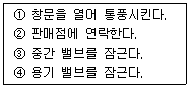
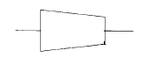
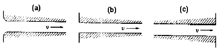

공조냉동기계기능사 (2003-01-26 기출문제)
1과목: 공조냉동안전관리
1. 보일러 사고원인 중 파열사고의 원인이 될 수 없는 것은?
- 압력초과
- 저수위
- 고수위
- 과열
(정답률: 77%)

2. 가스용기를 취급시 주의할 사항 중 잘못 설명한 것은?
- 용기를 사용하지 않을 때에는 밸브를 잠근다.
- 용기에 새겨있는 각인을 말소하지 않는다.
- 용기는 봉굽힘 도구로 사용할 수도 있다.
- 용기를 떨어뜨리지 않도록 한다.
(정답률: 87%)
3. 용접작업 중 귀마개를 착용하고 작업을 해야 하는 용접작업은?
- 가스 용접작업
- 이산화탄소 용접작업
- 플럭스 코어드 용접작업
- 플래시 버트 용접작업
(정답률: 52%)
4. 보일러를 계획적으로 관리하기 위해서는 보일러의 용량, 사용조건 등에 따라서 연간 계획을 세워야 한다. 아닌 것은?
- 운전계획
- 연료계획
- 정비계획
- 기록계획
(정답률: 66%)
5. 펌프의 보수 관리시 점검 사항 중 맞지 않는 것은?
- 윤활유 작동 확인
- 축수 온도
- 스타핑 박스의 누설 온도
- 다단 펌프에 있어서 프라이밍 누설 확인
(정답률: 41%)
6. 접지공사의 목적으로 올바른 것은?
- 전류변동방지, 전압변동방지, 절연저하방지
- 절연저하방지, 화재방지, 전압변동방지
- 화재방지, 감전방지, 기기손상방지
- 감전방지, 전압변동방지, 화재방지
(정답률: 79%)
7. 냉동장치에서 냉매가 적정량보다 부족할 경우 제일 먼저 해야할 일은?
- 냉매의 배출
- 누설부위 수리 및 보충
- 냉매의 종류를 확인
- 펌프다운
(정답률: 64%)
8. 감전 되거나 전기 화상을 입을 위험이 있는 작업에서 구비해야 할 것은?
- 보호구
- 구명구
- 구급용구
- 비상등
(정답률: 90%)
9. 연삭(grinding)작업 시 숫돌차의 주면과 받침대와의 간격은 몇mm 이내로 유지해야 되는가?
- 3
- 5
- 7
- 9
(정답률: 58%)
10. 사고의 본질적인 특성에 대한 설명으로 올바르지 못한 것은?
- 사고의 시간성
- 사고의 우연성
- 사고의 정기성
- 사고의 재현 불가능성
(정답률: 53%)
11. 다음 중 줄 작업시 유의해야 할 내용으로 적절하지 못한 것은?
- 미끄러지면 손을 베일 위험이 있으므로 유의하도록 한다.
- 손잡이가 줄에 튼튼하게 고정되어 있는지 확인한다.
- 줄의 균열 유무를 확인할 필요는 없다.
- 줄 작업의 높이는 허리를 낮추고 몸의 안정을 유지하며 전신을 이용하도록 한다.
(정답률: 81%)
12. 낙하나 추락으로 인한 부상 방지용 보호구가 아닌 것은?
- 안전대
- 안전모
- 안전화
- 장갑
(정답률: 78%)
13. 산소 용기의 가스누설검사에 가장 안전한 것은?
- 비눗물
- 아세톤
- 유황
- 성냥불
(정답률: 97%)
14. 다음 가스시설 중에서 가스가 누설되고 있을 때 가장 적절한 조치를 순서대로 나열한 것은?

- ①→ ②→ ③→ ④
- ④→ ③→ ①→ ②
- ②→ ①→ ④→ ③
- ③→ ②→ ①→ ④
(정답률: 80%)
15. 냉동장치의 냉매설비 기밀시험은?
- 설계압력 이상
- 설계압력 미만
- 설계압력 1.5배이상
- 설계압력 1.5배미만
(정답률: 12%)
2과목: 냉동기계
16. 어떤 기체에 15㎉/㎏의 열량을 가하여 700㎏ㆍm/㎏ 의 일을 하였다.이 기체의 내부 에너지 증가량은 몇 ㎉/㎏ 인가?
- 3.36
- 7.36
- 13.36
- 16.63
(정답률: 42%)
17. 어떤 냉동기를 사용하여 25℃ 의 순수한 물 100ℓ 를 -10℃의 얼음으로 만드는데 10분이 걸렸다고 한다면, 이 냉동기는 약 몇 냉동톤이겠는가? (단, 냉동기의 모든 효율은 100% 이다.)
- 3 냉동톤
- 16 냉동톤
- 20 냉동톤
- 25 냉동톤
(정답률: 55%)
18. 기체의 용해도에 대한 설명 중 맞는 것은?
- 고온. 고압일수록 용해도가 커진다.
- 저온. 저압일수록 용해도가 커진다.
- 저온. 고압일수록 용해도가 커진다.
- 고온. 저압일수록 용해도가 커진다.
(정답률: 58%)
19. 증기 압축식 냉동기의 냉매로써 구비해야 할 성질이 아닌 것은?
- 증발 잠열이 클 것
- 저압측에 있어 증기의 비열비가 클 것
- 표면장력이 적을 것
- 인화성, 악취, 독성 등이 적을 것
(정답률: 60%)
20. 냉매의 비열비가 크다는 것과 가장 관계가 큰 것은?
- 워터 쟈켓
- 플래시 가스
- 오일포밍 현상
- 에멀션 현상
(정답률: 32%)
21. 이상기체의 엔탈피가 변하지 않는 과정은?
- 가역 단열과정
- 등온과정
- 비가역 압축과정
- 교축과정
(정답률: 35%)
22. 압축기의 상부간격(Top Clearance)이 크면 냉동 장치에 어떤 영향을 주는가?
- 토출가스 온도가 낮아진다.
- 윤활유가 열화되기 쉽다.
- 체적 효율이 상승한다.
- 냉동능력이 증가한다.
(정답률: 77%)
23. 제빙용으로 브라인(brine)의 냉각에 적당한 증발기는?
- 관코일 증발기
- 헤링본 증발기
- 원통형 증발기
- 평판상 증발기
(정답률: 64%)
24. 수냉식 응축기의 능력은 냉각수 온도와 냉각수량에 의해 결정이 되는데, 응축기의 능력을 증대 시키는 방법에 관한 사항중 틀린 것은?
- 냉각수온을 낮춘다.
- 응축기의 냉각관을 세척한다.
- 냉각수량을 늘린다.
- 냉각수 유속을 줄인다.
(정답률: 61%)
25. 2단 압축장치의 구성 기기가 아닌 것은?
- 고단 압축기
- 증발기
- 팽창 밸브
- 카스케이드 응축기(콘덴서)
(정답률: 69%)
26. 압축방식에 의한 분류 중 체적 압축식 압축기가 아닌 것은?
- 왕복식 압축기
- 회전식 압축기
- 스크류 압축기
- 흡수식 압축기
(정답률: 63%)
27. 드라이어(Dryer)에 관한 사항 중 맞는 것은?
- 암모니아 액관에 설치하여 수분을 제거한다.
- 냉동장치 내에 수분이 존재하는 것은 좋지 않으므로 냉매 종류에 관계없이 설치하여야 한다.
- 프레온은 수분과 잘 용해하지 않으므로 팽창밸브에서의 동결을 방지하기 위하여 설치한다.
- 건조제로는 황산, 염화칼슘 등의 물질을 사용한다.
(정답률: 60%)
28. 정압식 팽창밸브의 설명 중 틀린 것은?
- 부하변동에 따라 자동적으로 냉매 유량을 조절한다.
- 증발기 내의 압력을 일정하게 유지시켜 주는 냉매 유량 조절밸브이다.
- 단일냉동 장치에서 냉동부하의 변동이 적을 때 사용한다.
- 냉수 브라인 등의 동결을 방지할 때 사용한다.
(정답률: 44%)
29. 유압 압력 조정 밸브는 냉동장치의 어느 부분에 설치 되는가?
- 오일 펌프 출구
- 크랭크 케이스 내부
- 유 여과망과 오일펌프사이
- 오일쿨러 내부
(정답률: 63%)
30. 냉동능력이 45냉동톤인 냉동장치의 수직형 쉘 엔드 튜브응축기에 필요한 냉각수량은 약 얼마인가? (단, 응축기 입구 온도는 23℃이며, 응축기 출구 온도는 28℃라고 함.)
- 38844(ℓ /h)
- 43200(ℓ /h)
- 51870(ℓ /h)
- 60250(ℓ /h)
(정답률: 27%)
31. 간접 팽창식과 비교한 직접 팽창식 냉동장치의 설명이 아닌 것은?
- 소요동력이 적다.
- RT당 냉매 순환량이 적다.
- 감열에 의해 냉각시키는 방법이다.
- 냉매 증발 온도가 높다.
(정답률: 64%)
32. 터보 냉동기와 왕복동식 냉동기를 비교 했을 때 터보 냉동기의 특징으로 맞는 것은?
- 회전수가 매우 빠르므로 동작밸런스나 진동이 크다.
- 보수가 어렵고 수명이 짧다.
- 소용량의 냉동기에는 한계가 있고 생산가가 비싸다.
- 저온장치에서도 압축단수가 적어지므로 사용도가 넓다.
(정답률: 42%)
33. 액순환식 증발기와 액펌프 사이에 반드시 부착해야 하는 것은?
- 전자 밸브
- 여과기
- 역지 밸브
- 건조기
(정답률: 64%)
34. 배관 내의 유체를 일정한 방향으로 흐르도록 하며, 역류를 방지하고자 하는 목적으로 설치되는 밸브는?
- 게이트 밸브(gate valve)
- 첵 밸브(check valve)
- 콕(cock)
- 안전 밸브(relief valve)
(정답률: 77%)
35. 25A 강관의 관용 나사산수는 길이 25.4mm에 대하여 몇 산이 표준인가?
- 19산
- 14산
- 11산
- 8산
(정답률: 43%)
36. 동관의 가지관 이음에서 본관에는 가지관의 안지름보다 얼마나 큰 구멍을 뚫는가?
- 9-8mm
- 7-6mm
- 5-3mm
- 1-2mm
(정답률: 58%)
37. 나사식 강관 이음쇠(파이프 조인트)에 대한 다음 글 중 맞는 것은?
- 소구경(小口經)이고 저압의 파이프에 사용한다.
- 관로의 방향을 일정하게 할 때 사용한다.
- 저압 대구경의 파이프에 사용한다.
- 파이프의 분기점에는 사용해서는 안된다.
(정답률: 45%)
38. 다음 그림은 KS배관 도시기호에서 무엇을 표시하는가?

- 부싱
- 줄이개
- 줄임 플랜지
- 플러그
(정답률: 52%)
39. 시퀀스 제어에 속하지 않는 것은?
- 자동 전기 밥솥
- 전기 세탁기
- 가정용 전기 냉장고
- 네온싸인
(정답률: 60%)
40. 스크류 압축기의 장점이 아닌 것은?
- 흡입, 토출밸브가 없어 밸브의 마모, 소음이 없다.
- 냉매의 압력 손실이 커서 효율이 저하된다.
- 1단의 압축비를 크게 취할 수 있다.
- 체적 효율이 크다.
(정답률: 69%)
41. P-h 선도의 구성요소에 대한 설명으로 적당한 것은?
- 압축과정은 등엔탈피선에서 이루어진다.
- 팽창과정은 등엔트로피선에서 이루어진다.
- 등비체적선은 습증기구역 내에서만 존재하는 선이다.
- 등압선에서 응축과정과 증발과정의 절대압력을 알 수 있다.
(정답률: 45%)
42. 다음 중 NH3의 누설검사로서 적절치 못한 것은?
- 악취가 심하므로 냄새로 판별 가능하다.
- 황초를 누설부위에 가까이 가져가면 흰연기가 발생한다.
- 물에 적신 페놀프탈렌지를 누설 주위에 가져가면 적색으로 변한다.
- 누설 의심 부분에 헤라이트 토치를 대본다.
(정답률: 70%)
43. 다음 중 1냉동톤 당 냉매 순환량(kg/h)이 가장 많은 냉매는?
- R - 11
- R - 12
- R - 22
- R - 114
(정답률: 33%)
44. 전기저항에 관한 설명 중 틀린 것은?
- 전류가 흐르기 힘든 정도를 저항이라 한다.
- 도체의 길이가 길수록 저항이 커진다.
- 저항은 도체의 단면적에 반비례한다.
- 금속의 저항은 온도가 상승하면 감소한다.
(정답률: 73%)
45. 증발식 응축기에 대한 설명 중 옳지 않는 것은?
- NH3 장치에 주로 사용된다.
- 물의 증발열을 이용한다.
- 냉각탑을 사용하는 것보다 응축압력이 높다.
- 소비 냉각수의 양이 제일 적다.
(정답률: 36%)
3과목: 공기조화
46. 공기조화의 기본요소에 해당되지 않는 것은?
- 감습
- 가습
- 순환
- 형태
(정답률: 87%)
47. 어떤 방의 체적이 2 × 3 × 2.5m이고 실내온도를 21℃로 유지하기 위하여 실외온도 5℃의 공기를 3회/h로 도입할 때 환기에 의한 손실열량은 약 몇 ㎉/h인가?
- 216
- 284
- 720
- 460
(정답률: 9%)
48. 다음 중 공기조화기의 구성요소가 아닌 것은?
- 공기 여과기
- 공기 가열기
- 송풍기
- 공기 압축기
(정답률: 48%)
49. 외기온도 30℃와 환기온도 25℃를 1:3의 비율로 혼합하여 바이패스 팩터(BF)가 0.2인 코일에 냉각.감습하는 경우의 코일 출구온도는 몇 ℃ 인가? (단, 코일 표면온도는 12℃이다.)
- 18.85
- 16.85
- 14.85
- 12.85
(정답률: 25%)
50. 일상 생활에서 적당한 실온과 상대습도는? (순서대로 실온℃, 상대습도%)
- 20 ~ 26 , 70 ~ 30
- 25 ~ 30 , 30 ~ 10
- 20 ~ 26 , 30 ~ 10
- 29 ~ 32 , 70 ~ 30
(정답률: 38%)
51. 다음 공조방식 중 개별식에 해당되는 것은?
- 덕트 병용 패키지 방식
- 유인 유니트 방식
- 단일 덕트 방식
- 패키지 방식
(정답률: 53%)
52. 다음 중 팬코일 유니트 방식을 채용하는 이유로 부적당한 것은?
- 개별제어가 쉽다.
- 환기량 확보가 쉽다.
- 운송 동력이 적게 소요된다.
- 중앙 기계실의 면적을 줄일 수 있다.
(정답률: 36%)
53. 다음 공조 방식에서 전공기 방식이 아닌 것은?
- 단일 덕트 방식
- 2중 덕트 방식
- 멀티 조운 유닛 방식
- 홴 코일 유닛 방식
(정답률: 50%)
54. 공기조화용 취출구 종류에서 원형 또는 원추형 팬을 달아 여기에 토출기류를 부딪치게하여 천장면에 따라서 수평판 사이로 공기를 내보내는 구조로 되어 있고 유인비 및 소음 발생이 적은 취출구는?
- 팬형 취출구
- 웨이형 취출구
- 아네모스텟형 취출구
- 라인형 취출구
(정답률: 67%)
55. 다음 중 사무실, 호텔, 병원 등의 고층 건물에 적합한 공기 조화 방식은?
- 단일덕트 방식
- 유인 유닛 방식
- 이중 덕트 방식
- 재열 방식
(정답률: 36%)
56. 다음은 증기난방의 특징을 설명한 것이다. 옳지 않은 것은?
- 온수에 비하여 열의 운반능력이 크다.
- 온수에 비하여 관경을 작게 해도 된다.
- 온수에 비하여 환수관의 부식이 적다.
- 온수에 비하여 설비 및 유지비가 싸다.
(정답률: 29%)
57. 공기 예열기 사용시 이점을 열거한 것 중 아닌 것은?
- 열효율 증가
- 연소 효율 증대
- 저질탄 연소 가능
- 노내 온도 저하
(정답률: 77%)
58. 원심송풍기의 풍량제어방법으로 적당하지 않은 것은?
- 온오프제어
- 회전수제어
- 흡입베인제어
- 댐퍼제어
(정답률: 56%)
59. (a), (b), (c)와 같은 관로의 국부저항계수(전압기준)가 큰 것부터 작은 것 순서로 나열하였을 때 가장 적당한 것은?

- (a) ＞ (b) ＞ (c)
- (a) ＞ (c) ＞ (b)
- (b) ＞ (c) ＞ (a)
- (c) ＞ (b) ＞ (a)
(정답률: 50%)
60. 복사난방의 설계에 사용하는 온도로서, 방을 구성하는 각 벽체의 표면온도를 평균하여 복사난방에서의 쾌감 기준으로 삼는 온도가 있다. 이를 무엇이라 하는가?
- 실내공기온도
- 복사난방온도
- 평균복사온도
- 평균바닥온도
(정답률: 49%)